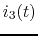
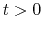
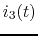
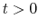

Instructions
In the circuit shown in the figure below,
,
,
, and the input voltage is V. The switch is closed at  .
Assume the circuit was at steady state before
.
Assume the circuit was at steady state before  . Find currents ,
and , together with as the complete responses of the circuit for .
Make sure the signs of these currents are consistent with the assumed directions as
shown in the figure.
. Find currents ,
and , together with as the complete responses of the circuit for .
Make sure the signs of these currents are consistent with the assumed directions as
shown in the figure.

Find the current  through the
through the  resistor in the circuit shown in the
figure below. Here the voltage source is
and the current
source is
resistor in the circuit shown in the
figure below. Here the voltage source is
and the current
source is
 .
.